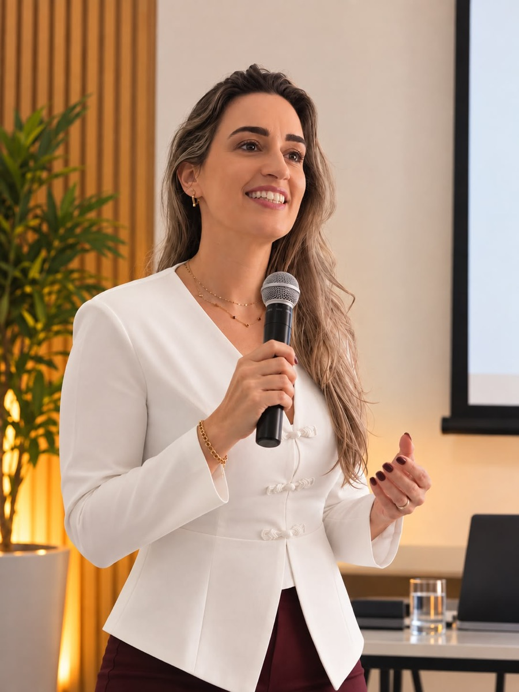

PALESTRAS
Conversas que despertam consciência e aproximam a saúde emocional da vida real.
Algumas conversas continuam depois que a palestra termina
Uma palestra pode informar, ensinar e apresentar novos conhecimentos. Mas acredito que ela também pode provocar algo além daquele momento.
Uma pergunta pode levar alguém a perceber algo que ainda não havia observado. Uma reflexão pode oferecer uma nova perspectiva. Um conceito pode ajudar a dar nome e compreensão a uma experiência que já fazia parte da vida, mas ainda não havia sido percebida daquela maneira.
É esse tipo de encontro que busco construir.
Mais do que transmitir conteúdo, quero que aquilo que foi compartilhado encontre algum lugar na experiência de quem está ouvindo.
Conhecimento que encontra a vida real
Saúde mental e desenvolvimento emocional envolvem conceitos importantes, mas eles ganham outro significado quando conseguimos reconhecê-los no cotidiano.
Por isso, minhas palestras aproximam conhecimento e experiência por meio de uma linguagem clara, exemplos, perguntas, metáforas, reflexões e, quando o formato permite, experiências práticas.
A proposta é tornar assuntos profundos acessíveis sem torná-los superficiais.
Porque não quero apenas que a pessoa saia pensando: "Eu entendi." Quero criar espaço para que ela também possa pensar: "Eu consigo reconhecer isso na minha vida."
Cada público tem uma realidade
Uma palestra sobre saúde emocional não precisa ser construída da mesma maneira para todos.
O contexto de uma empresa, o perfil de uma equipe, o objetivo de um evento e as características das pessoas que estarão presentes ajudam a definir a maneira como aquele conteúdo será desenvolvido.
Por isso, cada proposta pode ser adaptada considerando o tema, o público, o objetivo e o contexto do encontro.
Assim, preservamos a profundidade do conteúdo sem perder aquilo que considero essencial: que a conversa faça sentido para aquelas pessoas.
Temas que podem ser trabalhados
Os encontros podem abordar diferentes temas relacionados à saúde emocional e ao desenvolvimento humano, entre eles:
- Saúde mental
- Inteligência emocional
- Autorregulação emocional
- Estresse e sobrecarga
- Relacionamentos e comunicação
- Limites e autocuidado
- Comportamento humano
- Trauma e seus impactos
- Prevenção e promoção da saúde emocional
- Autorresponsabilidade
Outros temas também podem ser desenvolvidos de acordo com a necessidade e o objetivo da proposta.
Diferentes formatos para diferentes propostas
Esse trabalho pode acontecer de diferentes maneiras.
Pode ser uma palestra para um grande evento, uma ação dentro de uma empresa ou instituição, um encontro para uma equipe, um workshop com maior participação do público ou um treinamento desenvolvido a partir de uma necessidade específica.
Também pode acontecer em grupos menores, permitindo mais interação, troca e aprofundamento.
O número de participantes não determina a importância da experiência. O que muda é a maneira como ela pode ser construída.
O formato é pensado de acordo com o público, o objetivo e aquilo que se deseja proporcionar naquele encontro.
Uma palestra termina. A reflexão pode continuar.
Meu objetivo é que o conteúdo não permaneça apenas naquele espaço.
Que uma pergunta acompanhe a pessoa depois. Que determinado conhecimento seja lembrado quando uma situação real acontecer. Que uma reflexão possa produzir mais consciência sobre a maneira como ela se relaciona consigo, com os outros ou com aquilo que vive.
Porque uma experiência significativa não precisa oferecer todas as respostas.
Às vezes, seu maior efeito está naquilo que continuamos pensando depois que ela termina.
Vamos construir uma proposta?
Se você está organizando um evento, uma ação para uma empresa ou instituição, um workshop, um treinamento ou um encontro para uma equipe, podemos conversar sobre o objetivo, o público e a necessidade para construir o formato mais adequado.